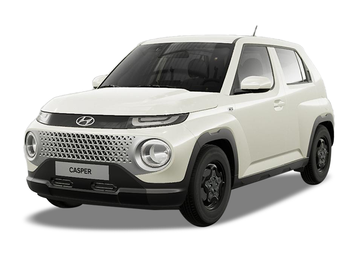

캐스퍼구매안내
구매 절차를 차근차근 알려드립니다.
캐스퍼, 온라인에서만 구매할 수 있습니다.
캐스퍼 누적생산 10만대 돌파…GGM, 양산 2년만에 달성
2023.10.10

- 전국 최초 지역 상생형 기업으로 출발한 광주글로벌모터스(GGM)가 양산 체제 2년여만에 누적 생산 10만대 돌파
- 연간 생산량은 2021년 1만2천대, 지난해 5만대 돌파에 이어 올해 3만8천대 등 누적 10만대 생산을 달성
-
이전
현대차-지그재그, 캐스퍼 출고 고객 이벤트 실시
-
다음
“창피해서 못타겠다”…돈없는 20대는 싫다는 경차, 회장도 엄빠도 반했다